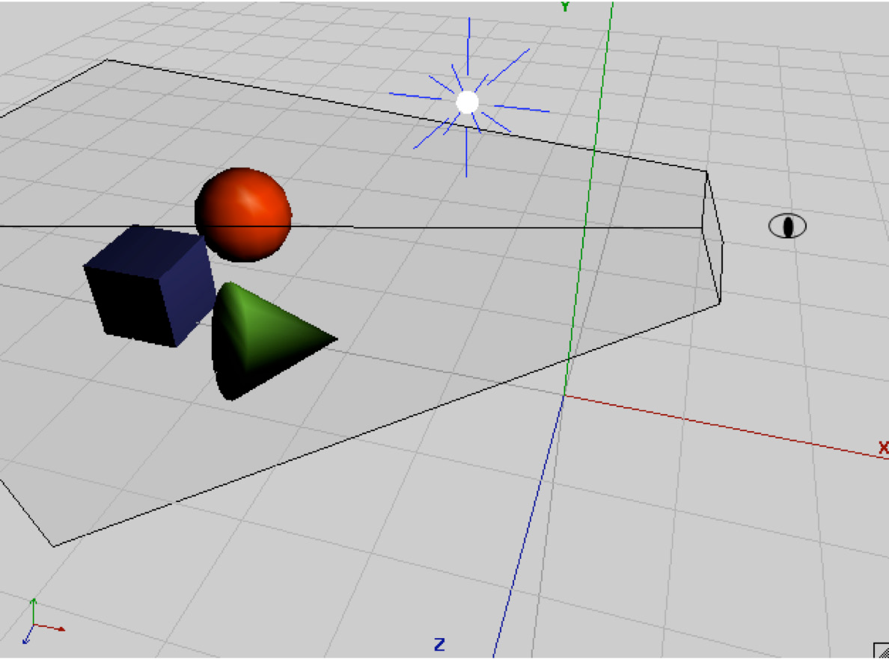
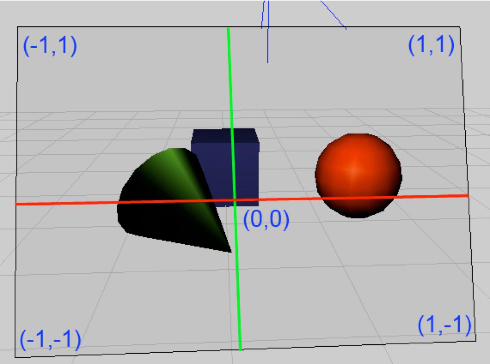
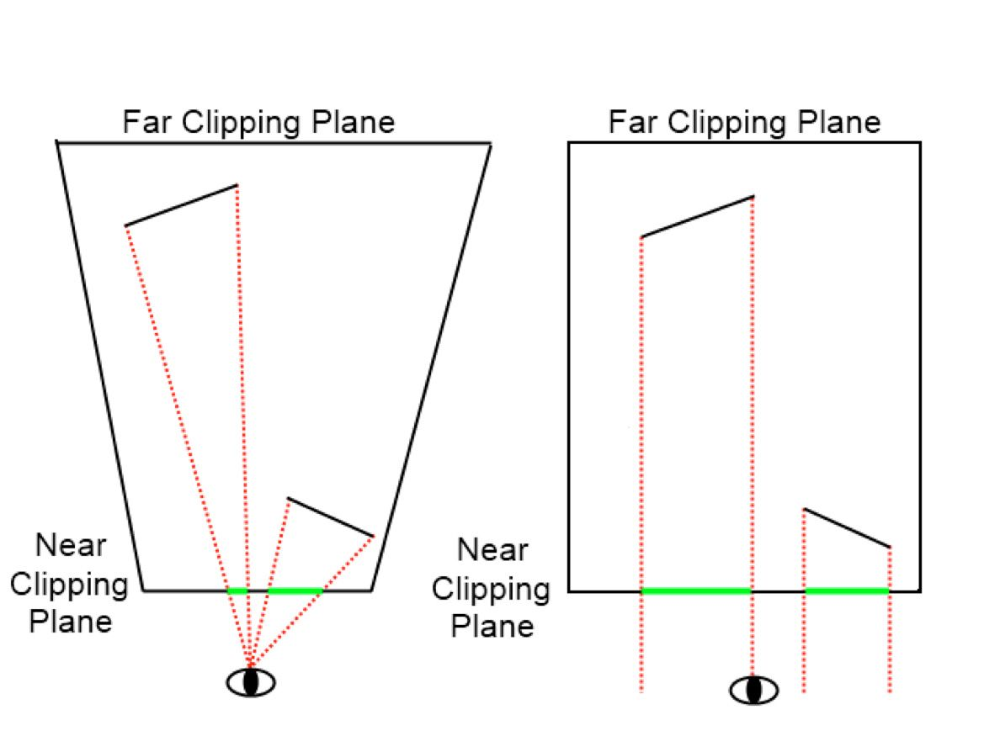
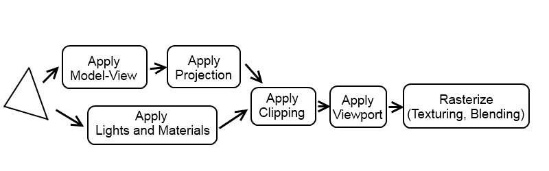
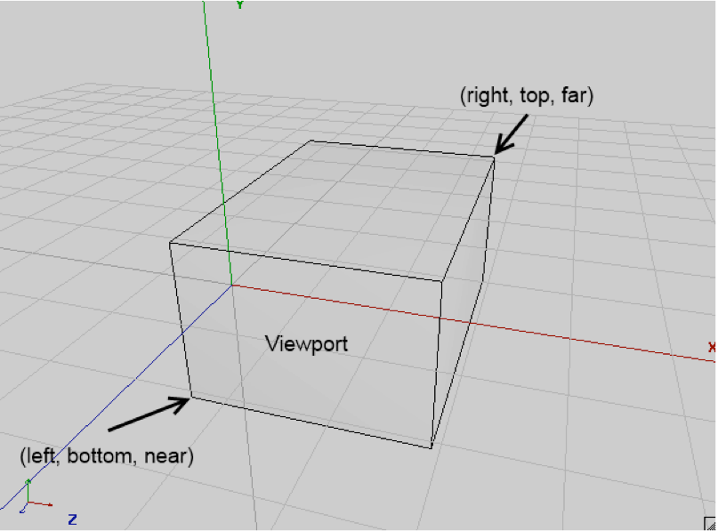
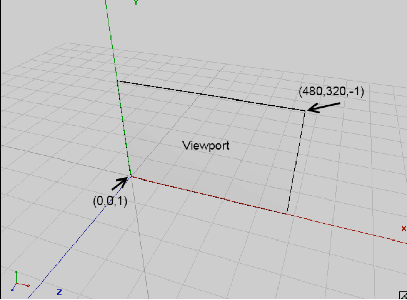

Beginning Android Games学习笔记
文章目录
Game Development 101
在开始hacking前先进行游戏设计。这并非指基本的设计，比如FPS中的WSAD的鼠标之类的。而是类似：是否需要splash screen？需要哪些菜单项？游戏设置里需要有哪些选项？等等。
没有银弹。
游戏流派
开始之前先决定流派。除非你创造了新的流派。同一流派的游戏往往有类似的游戏机制（如控制方式、游戏目标之类）。
- Causal Game
- 猜迷
- 动作
- 塔防
- 其它创新的游戏
游戏设计：笔比代码更强大
在编码前集中设计游戏的用户体验：
- 核心机制
- 主要角色的粗略故事
- 基于角色及其背景设计粗略的画面风格
- 主要画面的概要及过渡画面
以一个贪食蛇游戏为例。可以用纸和笔记录下这些设计，以坐标纸画出界面草图。
核心机制：
- 蛇头控制前进方向并拖动它的尾部。头和尾由相等尺寸的部分组成只是显示不同
- 当蛇走到屏幕边界时，从屏幕的另一边重新进来
- 左右按钮按下时，蛇将顺时针或逆时针转动90度
- 如果蛇撞到自己，游戏结束
- 如果蛇撞到了新块，则块消失，增加10分，添加一个新块到蛇尾。
复杂的游戏需要将这些内容分开来设计，最后再将这些合并起来。
最后一个隐含的机制是：游戏将在蛇充满整个屏幕时结束。
故事和美术风格
取个有趣的名字：Mr.Nom
其它：
- 涂鸦风格。将草图中设计的块扫描进去作为图像资源
- Mr.Nom是利己主义者，我们修改它的块改小点并加个帽子
- 让Mr.Nom在每次吃掉一个墨水块时发出咕哝声
- 将游戏及其它标识的地方设置为Mr.Nom而不是Doodle Snake
屏幕显示和过渡
屏幕显示的组成：
- 屏幕是一个具有元子性的单元，它将整个显示屏充满，负责游戏的一个部分（如：主画面、设置界面或者游戏屏幕）
- 屏幕可以由多个组件（如：按钮、控件等等）
- 屏幕允许用户与屏幕元素交互。这些交互可能触发屏幕过渡（从一个屏幕转到另一个屏幕）。
按这些规则，Mr.Nom游戏的屏幕和过渡如下：
- 首先显示游戏的名称，放上Mr.Nom的logo
- 为了让这些看起来更一致，我们也需要背景，可以重用这个背景
- 玩家需要玩游戏，因此需要放一个Play按钮。这将是第一个交互组件
- Help按钮过渡到帮助屏幕
- 声音设计为可爱类型的，有些玩家可能需要静音。给他们一个切换这个选项的按钮
然后是详细设计各个屏幕及屏幕上的元素，各个屏幕的状态及不同状态之间的切换，各个屏幕之间如何过渡等细节。
编码
另一个蛋与鸡的问题：我们知道Android游戏相关的API。但我们仍不知道如何编写游戏。我们有游戏设计，但是将它转化为可执行的程序对我们来说仍像是种巫术。下面将开始介绍一个游戏的基本组成。我们将看到接口的伪代码然后用Android提供的API来实现它。使用接口的2个原因：它让我们关注于语义而不是实现细节；它让我们可以在以后更改实现。（比如：将基于CPU渲染的2D画面替换成基于OpenGL ES的实现）。
游戏的基本框架可以分为以下模块：
- 窗口管理：它的职责是创建窗口和处理关闭窗口、暂停/恢复Android应用程序等
- 输入：与窗口管理模块相关，跟踪用户的输入（比如：点击事件、按键等）
- 文件IO：用于从磁盘读取我们的资源（asserts）
- 图像：这可能是实际游戏中最复杂的模块。它的职责是加载图像并将它们绘制到屏幕上
- 音频：它的职责是加载和播放所有声音
- 游戏框架：将上面所有的内容连接到一起提供一个易于编写游戏的基础
每个模块都是由一到多个接口组成。每个接口将有至少一个依赖于底层平台（这里是Android）的实现。
应用程序和窗口管理
游戏与其它程序一样有UI。它包含在某种窗口中。窗口作为容器，基本上可以将它当作画布，我们在上面绘制游戏内容。
多数操作系统允许用户通过某种方式与窗口交互。
应用程序和窗口管理模块也实际上负责设置窗口以使得它填充满某个UI组件以便我们可以将来在上面进行渲染。它也接收用户输入。UI组件可以使用CPU或依赖于硬件加速（OpenGL ES）进行渲染。
应用程序和窗口管理模块没有实际的接口集。我们会将它合并到游戏框架中。我们需要记住应用程序状态和窗口事件需要管理：
- 创建：在窗口（应用程序）启动时被调用一次
- 暂停：在应用程序被某种机制暂停运行时被调用
- 恢复：在窗口被放到前台应用被恢复运行时被调用
输入
用户需要以某种方式与游戏交互。多数操作系统中，输入事件被分发给当前被聚焦的窗口。这个窗口再将事件分给被聚焦的UI组件。这个分发过程对用户是透明的；我们需要关心的只是从被聚焦的UI组件获取事件。操作系统的UI API会在事件分发系统中提供某种钩子机制以便我们可以简单的注册和记录事件。通过钩子记录事件是输入模块的主要任务。有两种操作可以记录这些信息：
- 轮询：通过检查输入设备的当前状态。任何当前检查和上次检查之间的状态将丢失。这种输入处理适用于检查类似用户是否点了某个特殊的按钮之类的情况。不适合于跟踪文本输入，按键事件的顺序也会丢失。
- 基于事件的处理：它能提供完整自上次检查以来完整的事件历史。适用于执行文本输入和任何依赖于顺序的事件。它也适用于检查手指何时第一次点击屏幕或者何时离开屏幕的。
输入设备——Android有3种主要输入方法：触摸屏、键盘/轨迹球和加速感应。前2者可以适用于轮询和事件机制。加速感应通常只适用于轮询。触摸屏事件可以生成三种事件：
- 接触：在手指接触屏幕时发生
- 拖动：手指在屏幕上拖动时发生。在拖动事件之前总会有一个接触事件
- 离开：在手指离开屏幕时发生
每个触摸屏事件都有附加信息：相对于UI组件原点的相对位置和在多点触控条件下区分接触手指的索引指示器。
键盘可以产生两种事件：
- Key-down：在一个键被按下时发生
- Key-up：在键弹起时发生。这个事件的前面总会存在一个Key-down事件
键盘事件也携带了附加信息。Key-down事件保存了被按的键的代码。Key-up事件保存了键的代码和一个实际的Unicode字符。Key-up事件产生的键代码和Unicode字符是不同的。其它键的状态也被记录，比如Shift键。通过这种方法，我们可以在key-up事件中获得大写和小写字母。在key-down事件中我们只知道某种按钮被按下了；而不知道实际产生了什么字符。
加速感应——我们总是轮询加速感应。加速感应报告加速度x,y和z三个方向的加速。x沿屏幕下边从左向右，y沿屏幕左边从下向上，z沿与屏幕垂直方向从下向上。各个方向以米/秒的平方(m/s^2)表示。
文件IO
通过输入输出流读写数据。从APK文件中读取Assert。
我们需要的文件IO接口：
|
|
音频
音频编程是个更加复杂的主题。我们不使用高级音频处理，只是回放从文件加加载的声音效果和音乐，与图像模块加载位图类似。
声音的物理现象
声音通常是被当作波在某种媒介中传播，比如在空气或水中。波不是实际的物体，而是分子在媒介中的运动。
记录和回放
声音的记录和回放看起来非常简单：记录时，我们只需要记录在某个时间点在某个区域中声波产生的分子压力有多大。回放只是让喇叭周围的空气分子像我们记录时的那样波动就可以了。
实际上当然比这要复杂。音频的两种记录方式：模拟的和数字的。这两种方式都是通过某种麦克风记录音波，通常使用某种薄膜将分子压力记录为某种信号。
记录数字音频时是时间上分离的时间点来记录的。根据在薄膜上的分子压力它被推向内或向外。这个过程被称为采样，我们在不同的时间点上进行采样。在某个时间单元上进行的采样次数被称作采样率。通常这个时间单元以秒记，这个单位被称作Hz。每秒进行的采样次数越多，音频的质量就越高。CD回放的率是44100Hz即44.1KHz，在电话传输的语音是8KHz。
采样率只是一种音频质量的一种属性。存储每个采样状态的方法也扮演了重要的角色，它也是数字化的的一个子工程。这个采样的状态实际上是薄膜离它的自然原点的位置。为记录下它是向外还是向内推的。采样状态被记录为正数或附数。我们可以将这个数以多种方式记录：8位、16位或者32位整数，32位浮点甚至是64位浮点数。每种数据类型都有它的精度限制，8位的整数只能存储127个正数和128个负数值。32位整数则提供了更多的值。当存储浮点数时，这个状态值通常被记录在-1和1之间。最大正数和最小附描述了薄膜与它的自然原点的位置差。薄膜的状态也因此被称为振幅。它描述了它遇到的声音的响亮程度。
单个麦克风只能记录单声道声音，它将丢失空间信息。两个麦克风可以让我们可以度量出在不同的空间位置，因此被称为立体声。你可以将我个麦克风放在左边另一个放在右边以记录下立体声。当这两个声音被同时播放时，可以再现出空间感。但这也意味着在保存立体声时我们需要保存两倍数量的采样。
回放则简单一些。一旦我们有了数字格式的音频采样，通过指定采样率和数据类型我们就可以将这些数据放到音频处理单元，它会将这些信息转化为信号传递到喇叭上。喇叭将这些信号转化为薄膜的振动，它按顺序使周围的空间振动产生声波。这与记录声音时相同，只是反过来了。
音频质量和压缩
根据上面的内容可以知道更高的采样率和更精确的数据类型可以得到更好的音频效果。但是也意味着需要更大的空间来存储音频信号。
设想记录一段60秒的的音频两次：一次是8KHz的采样率每个采样以8位来存储，另一次是44KHz的采样率每个采样以16位来存储。第一种情况下每个采样率占用1byte。除以采样率8000Hz，我们每秒需要8000butes。完全保存60秒的音频记录需要480000butes大概为半MB。另一种方式下：每个采样2bytes，2乘以44000bytes每秒。即88000butes每秒。乘60秒，达到5280000bytes超过5MB。通常3分钟的流行音乐需要超过15MB内存，这还只是单声道的录音。立体声所需内存还要翻倍。
很多聪明的人们相出了复杂的算法将音频进行压缩。压缩后的音频通常损失很小，原始音频中某些次要的部分被忽略了。当你播放MP3或者OGG时，实际听到的是有损的压缩音频。因此，使用MP3或者OGG将帮助我们节约大量的磁盘空间。
如何从被压缩文件中回放音频呢？有一些专业的解码硬件可以处理各种压缩音频格式，普通的音频硬件只能处理未压缩的采样。在将采样传递给音频卡之前，我们需要先读取这些压缩的音频并进行解压，或通过流读取所需要的部分。
实践
由于音频要占用大量内存。我们在播放背景音乐时，将使用音频流，通常只有一个音频流在播放，因此我们只需要访问一次磁盘。
对于音效，比如枪声等，则不同。通常需要多次播放。应该将这些短的声音加载到内存中。
因此，我们有下面的需求：
- 我们需要一个方式从文件加载音频流
- 需要控制音频流的播放
- 我们需要控制完全加载到内存的音频的播放
将这些直接转换成Audio、Music和Sound接口：
|
|
Audio接口使用我们的方法来创建Music和Sound实例。Music表示音频流文件。Sound表示保存在内存中的音效。Audio.newMusic()和Audio.newSound()都接收文件名参数并抛出IOException。文件名指向APK文件中的assert文件。
|
|
Music接口包含的内容更多点。除了控制播放外还可以设置是否循环播放。也允许设置音量值——从0到1之间的浮点数。在我们不再需要这个Music实例时，应该使用dispose来关闭资源。
|
|
Sound接口更简单些。我们只需要调用它的play()方法，它接收一个音量参数。当我们不需要这个实例时也使用dispose释放资源。
图形
图形模块用于将图像绘制到屏幕上。如果需要高性能的图形，则至少需要知道图形编程的一些基础知识。我们从2D图形开始。
问题：图片是如何输出显示的？
光栅、像素和帧缓冲
当今的显示器都是基于光栅的。光栅是一种二维的网格，称为图片元素，即像素。光栅网格有有限的宽和高，通常用每行和每列的像素个数表示。
像素有2个属性：它在网格上的位置和颜色。位置是二维的迪卡尔坐标。这意味着它总是整数。在这个坐标系中原点在网格的左上角。x轴从左向右，y轴从上至下。
网格的左上角是(0,0)。坐标系中x轴最大值是光栅宽度减1，y轴最大值是光栅高度减1。
显示器从图形处理器接收固定的流信息。它将光栅中每个像素的颜色按程序或操作系统的控制绘制到屏幕上。显示器将每秒刷新很多次显示。这个频率叫作刷新率。以Hz表示。液晶显示器的刷新率通常是每秒60Hz；CRT和等离子显示器通常会有更高的刷新率。
图形处理器可以访问特殊的被称为显示内存（VRAM）的内存区域。VRAM是一块保留的区域用于保存显示在屏幕上的每个像素。这个区域通常被称为帧缓冲。一个完整的屏幕图片被称作一帧。对于显示在光栅网格中的每个像素，在帧缓冲中都有一个内存地址保存了它的颜色。当我们需要改变屏幕显示时，只需要简单的修改VRAM中像素的颜色值。
为什么y轴在坐标系统中是从上向下的？VRAM或者RAM，是线性的一维的。可以将它看作一维数组。如何将2维的像素坐标映射到一维的内存地址上呢？位于(x,y)坐标上的像素的内存地址是：
|
|
我们也可以从地址计算出坐标：
|
|
因此y轴坐标从上向下是因为像素颜色所使用的内存布局决定的。显示器将从左至右坐上至下更新每个像素的颜色，直到屏幕的底部。它可以很方便的将VRAM中的内容转换成屏幕上的颜色信息。
NOTE：如果可以完全访问帧缓冲，则可以得到非常好的性能。现代操作系统不允许用户直接访问帧缓冲。通常是绘制到内存区域然后由操作系统将它们复制到实际的帧缓冲。
垂直扫描和双缓冲
前面介绍过的刷新率看起来速度比较慢，有可能出现写帧缓冲的速度快过刷新的速度。更坏的是我们不知道VRAM是何时被复制到帧的，这可能会产生一个问题如果我们在这个中间绘制了新的内容。则屏幕会显示一部分新帧的内容和一部分旧帧的内容。这在很多PC游戏中可以看到。
解决这个问题的一个办法是被称为双缓冲。它不只使用一个帧缓冲，图形处理器（GPU）管理两个，一个前台缓冲一个后台缓冲。前台是显示器可用的帧，后台帧是允许绘制下一帧才会显示的。当我们完成绘制后，我们告诉GPU将这两个缓冲区进行交换，通常只是交换前台和后台缓冲的地址。在图形编程API文档中，可以找到page flip和buffer swap之类的，就是指的这个操作。
双缓冲没有完全解决这个问题，尽管：交换可能发生在屏幕刷新显示内容的中间。这就是垂直扫描出现的原因。当我们调用buffer swap方法时，GPU将阻塞直到显示器发出它已经完成当前刷新的信号。这时GPU可以安全的交换缓冲区地址。
幸运的是，现在我们不需要关心NVRAM、双缓冲和垂直扫描的细节了。我们通过一组API来处理应用程序窗口的内容。这些API，如：OpenGL ES，提供硬件加速，这基于在图形芯片上使用特殊的电路来处理VRAM。可以看到这里没有魔法！你应该知道内部的工作原理，至少在较高的层面上，这可以让你知道你的应用的性能特性。
当我们使用非硬件加速的API渲染时，我们不直接处理显示本身。而是在我们的窗口中绘制一个UI组件。这里我们是处理一个延伸至整个窗口的UI组件。我们的坐标系统不会延伸至整个屏幕，只是在这个UI组件中。通过UI组件自身的虚拟帧缓冲，它变成了我们的显示器。操作系统将管理所有可见窗口中的复合组件，确保组件被正确的转化到实际帧缓冲的区域中。
什么是颜色？
物理上讲颜色是不同波长的光波。
颜色模型
RGB、YUV和CMYK。多数程序API中都是使用RGB颜色模型。
颜色的数字化编码
如何将RGB三种颜色转化到内存当中？首先是要定义数据类型。我们可以使用浮点数和指定的范围来描述。比如0.0至1.0之间的浮点数。但是这种方法会战胜大量的空间（每个像素3乘以4或8bytes，依赖于使用32位或64位浮点数）。
我们可以丢失掉一部分颜色以减少开销，这完全可以，显示器能发出的颜色通常也有一定范围限制。因此我们可以使用整数代替浮点数。我们使用32位整数，使用无符号bytes来描述颜色组成，每个组成的范围是从0至255。对于一个像素，我们只需要3bytes，或者24bits。这可以描述2的24次方（16777216）种不同的颜色。
也可以使用16bit来描述像素的颜色。红使用5bits，绿使用6bits，蓝使用余下的5bit。绿使用6bit的原因是我们的眼睛可以看到比红和蓝更多的绿色。
图片格式与压缩
Alpha混合
使用32bit描述像素颜色时，可以用24bit来描述RGB值，另外的8bit描述alpha值。
图像绘制到帧缓冲中的时候与顺序是相关的，后面绘制的会屏幕前面的，如果存在alpha值，则颜色的计算方式会不同。
|
|
alpha值通常在0.0到1.0之间。计算出来的值才是实际显示到屏幕上的值。多数图形软件支持alpha值的计算，如果它不支持则我们可以在加载它们时自己在内存中计算。
游戏框架
游戏应该执行的任务：
- 游戏被划分到不同的画面，每个画面都执行类似任务：处理用户输入、将输入应用到屏幕状态、渲染场景。某些屏幕画面可能不需要用户输入，但它会在经过一段时间后转换到另一个画面（如：Splash画面）。
- 画面需要以某种方式进行管理（比如：跟踪当前的画面并且要有方法过渡到新画面，将旧画面销毁并将新画面设置为当前画面）。
- 游戏还需要允许画面访问不同的模块（图形、音频、输入等）。因此它需要加载资源，获取用户输入，播放声音，渲染缓冲区等等。
- 游戏应该是实时的（这意味着移动和更新应该是不断进行的），我们需要让当前的画面不断的更新自己的状态并尽快的渲染。当用户退出游戏时这个循环将被终止。这个循环的单次迭代被称为一帧。每秒的帧数被称为帧率（FPS）。
- 我们也需要跟踪上一帧以来所消耗的时间。这可以用于帧率无关的运动。
- 游戏需要跟踪窗口的状态（如：它被暂停或恢复），并将这些事件通知给当前的画面。
- 游戏框架还需要处理窗口和创建要渲染的UI组件并从它们接收输入。
游戏框架伪代码
|
|
以上代码是几乎所有游戏的工作方式。
现代操作系统的UI应用程序通常不是实时的。它们基于事件机制，当操作系统将输入事件通知应用时，应用程序渲染自身。这通常是通过在应用启动的时候向操作系统注册回调，然后由它们处理事件通知。这些都发生在UI线程中——一个UI程序的主线程。通常应该尽快从回调中返回，因此我们不需要来自己实现这个循环。
我们需要处理游戏的主循环，它将在游戏启动时从主线程派生出来。这意味着我们需要某些措施以便从UI线程中接收事件，比如用户输入和窗口事件。我们需要在某些点上对游戏主循环和UI线程进行同步。
游戏和画面接口
游戏接口
- 设置窗口和UI组件并向UI线程注册钩子以便我们接收窗口和输入事件
- 启动游戏主循环线程
- 跟踪当前画面并在主循环的每次迭代中告诉它更新状态和展现自己
- 将UI线程中的窗口事件（如暂停和恢复事件）传送到主循环中并将它们传递到当前画面以便它改变状态
- 允许游戏访问所有底层模块：输入、文件IO、图形和音频
画面抽像类
- 需要通过访问游戏接口的实例来访问底层模块
- 需要一个update方法来更新状态
- 需要present来展现自己
- 需要提供暂停和恢复方法以便游戏实例能暂停或恢复当前的画面
- 还需要一个dispose方法来释放系统资源（如assets中的Pixmap）
作为游戏开发者，我们想要成为不可知论者，不想要知道主循环是否在运行、是否需要与UI线程同步等这些细节。我们只需要根据底层模块和窗口事件实现不同的游戏画面。
帧率无关的运动
假设用户的设备以60FPS运行我们的游戏。位图以每100帧100像素的速度沿X轴移动。即每帧移动一个像素。它将在经过1.66秒（100/60）从(0,0)移动到(100,0)。
如果第二个用户的设备只能以30FPS运行我们的游戏。那它将会需要3.33秒才能从(0,0)移动到(100,0)。
这将会不同设备带来不同的体验。解决这个问题的办法是使用帧率无关的运动，而不是在每帧移动固定的像素。如果我们需要以每秒50像素的速度移动，则在计算新位置时使用50*deltaTime就可以计算出自上一帧到现在应该移动的像素。
游戏开发者的Android
实现游戏框架及底层组件的实现基础。
Mainfest文件
Android应用包括多种组件：
- Activity：UI组件
- Service：后台工作
- Content Provider：它可以让你的应用程序与其它应用共享数据
- Intent：它由系统或应用自己创建，然后被传递到应用中对它感兴趣的地方
- Broadcast Receive：它对某些Intent作出反应，并执行一些相应的动作
manifest元素
它是AndroidMainifest.xml的根元素。它的命名空间为android。
- package属性指定应用的包名称
- versionCode和versionName属性指定应用的版本号的版本名称
- installLocation属性可以用于指定2.2及以上版本的系统将应用安装到外部存储卡上。只需要将它的值设置为preferExternal。
application元素
它的属性值中以@开头表示从其它地方获取资源。如从res/drawable目录获取图像（不要指定扩展名）。或者从res/values/strings.xml中获取字符串。
- icon属性指定程序图标
- label属性指定程序的名称
- debuggable属性指定程序是否允许被调试
activity元素
- name属性指定activity所对应的Java类相对于manifest的package属性所指定的包名的名称。你也可以直接指定类的完整包名和类名
- label属性显示于activity的标题栏。如果未指定application元素的label属性，这个label将被作为应用名称的标题。
- screenOrientation属性用于指定activity所使用的屏幕方向。可选值可以是portrait,landscape。如果不指定则会使用设备的当前方向，则将是由加速感应的数据决定的。这也意味着当屏幕方向改变时，activity将会被销毁并重新启动。
- configChanges属性指定设备调整方向或者滑出键盘时作为配置改变进行处理。这种情况下，Android将销毁并重启应用程序以适应这种改变。这通常不适合于游戏。它的可选值有keyboard, keyboardHidden和orientation，多个选项以|组合。
Android应用程序有多个入口，可以从activity或service中接收系统或第三方程序发送的特定的intent开始执行。因此我们需要告诉Android针对特定的intent，应该启动哪个activity或service。这些配置记录在activity的intent-filter子元素中。
常见的两种intent filter：action和category。action元素告诉Android这个activity是程序的主入口。category元素指定我们想要把这个activity添加到app launcher中。这两个元素放在一起告诉Android将应用程序的图标放到app launcher，当点击它时启动相应的activity。这两个元素的name属性指定了activity将作出反应的intent。android.intent.action.MAIN是Android系统所使用的一个特殊的intent，它用于启动一个应用程序的主activity。android.intent.category.LAUNCHER用于告诉Android这个activity是否应该作为在app launcher中的应用程序入口。通常只会在一个activity中指定这两个intent filter。
uses-permission元素
它是manifest的子元素。它用于对资源的访问许可。它的属性name指定要访问的资源。常用的资源有：
- android.permission.RECORD_AUDIO：允许访问录音设备
- android.permission.INTERNET：允许访问网络API
- android.permission.WRITE_EXTERNAL_STORAGE：允许读写外部存储设备
- android.permission.WAKE_LOCK：允许我们取得wake lock。通过使用wake lock我们可以保持设备不进入睡眠状态，即使长时间不接触屏幕。
程序安装时将提醒用户程序需要这些访问许可。
uses-feature元素
它用于指定应用程序对设备功能的需求。当你从设备上访问Android Market时，如果你的设备无法满足这些要求，这个程序可能不会显示出来。uses-feature有下面的属性：
|
|
常用的与游戏相关的feature：
- android.hardware.touchscreen.multitouch：需要设备支持多点触控。这种类型的屏幕在跟踪多个手指的独立运动轨迹方面会有些问题。
- android.hardware.touchscreen.multitouch.distinct：这是上一个功能的大哥。它需要完全的多点触控支持。
游戏开发中通常还需要指定用到OpenGL ES的版本：
|
|
这里指定的是需要设备支持OpenGL ES2.0。
use-sdk元素
它是manifest的子元素。每个SDK都有自己的版本号。这个元素可以指定应用程序需要的SDK的最小版本和目标版本号。
创建游戏的步骤
需求
- 应该能使用最最新的SDK，并与低版本SDK兼容。至少支持Android 1.5以上的版本
- 应用能安装到SD卡上
- 允许调试
- 应该有一个主activity处理所有配置改变，在键盘滑出或者屏幕方向改变时不会被销毁
- 它应该固定为纵向或横向
- 应该允许我们访问SD卡
- 它应该获取到wake lock
步骤
- 在Ecipse里创建工程
- 选反SDK版本，设置目标版本的最低的SDK版本
- 将最低的SDK版本设置为3
- 打开AndroidManifest.xml
- 在manifest元素中添加installLocation属性，将它的值设置为preferExternal
- 将application元素的debuggable属性设置为true
- 在activity元素中添加screenOrientation属性设置为portrait或landscape。如果要处理keyboard, keyboardHidden, orientation属性改变，则可以将activity元素的configChanges属性设置为keyboard, keyboardHidden或orientation
- 添加两个子元素到manifest元素中，并指定它们的name属性为android.permission.WRITE_EXTERNALSTORAGE和android.permission.WAKE_LOCK
- 最后，将targetSdkVersion属性添加到use-sdk元素并指定目标平台SDK版本。它应该与第一步指定的版本一致
定义游戏的图标
application元素里定义了属性icon，它指向了res/drawable目录下的icon这个文件。从android 1.6(SDK Version 4)开始。res/drawable目录下可以包含不同分辨率的资源，ldpi是36x36，mdpi为48x48，hdpi是72x72。
为了兼容1.5版本系统，我们还需要添加res/drawable目录将res/drawable-mdpi目录的内容放到这里。因为Android 1.5不知道ldpi,mdpi和hdpi，它有可能找不到这些资源。
Android API基础
Activity的生命周期
理论
Activity的三种状态：
- Running：顶层的Activity占用屏幕与用户交互
- Paused：当Activity被其它透明的Activity或者对话框覆盖，但是仍然在屏幕上可见，或者屏幕被锁。这个状态的Activity有可能被Android系统在任何时间点杀掉。这时的Activity仍然存活并有可能重新被放到前台运行。
- Stopped：当Activity完全被另一个Activity掩盖不再显示在屏幕上（比如启动了另一个Activity或者用户按下了Home键）。系统可以将这个Activity杀掉以回收内存。
在Paused和Stopped状态下，Android系统可以决定是否杀掉Activity。它有可能会调用这个Activity的finished()方法来通知它，也有可能直接杀掉Activity所对应的进程。
在Paused和Stopped状态下，Activity有可能被放到前台而进入Running状态。恢复运行的Activity仍然是之前内存中的同一个实例，所有Paused或者Stopped时内存的状态和变量都存在。
生命周期方法：
- onCreate()：应用初次启动时调用的方法。通常在这里设置UI组件和初始化hook到输入系统。这个方法在整个生命周期中只被调用一次。
- onRestart()：用于从stopped状态中恢复。它的前一个调用为onStop()。
- onStart()：它在onCreate()之后被调用，或者在Activity从Stopped状态恢复之后被调用。在后面这情况下它的前一个方法调用是onRestart()。
- onStop()：当Activity进入Stopped状态时被调用。它的前一个方法是onPause()。这意味着在activity进入Stopped之前，它先Paused。onPause()方法可能系统杀掉Activity之前最后一个被调用的方法。我们可能在这里保存状态。因为系统可以决定在杀掉Activity之前不调用onStop()方法，所以我们应该在onPause()方法中保存数据。
- onDestroy()方法：这是Activity生命周期结束的调用，当Activity不可恢复地被销毁时将调用它。这是最后一个用来保存信息的方法。注意，这个方法有可能永远不会被调用，系统有可能在调用onPause()或者onStop()之后将Activity杀掉。
三个重点：
- 在Activity进入Running状态之前，onResume()方法总是会被调用，不论它是从Stopped或Paused状态恢复。因此我们可以简单的忽略onRestart()和onStart()方法。不用区分它是从Stopped状态还是从Paused状态恢复的。对于游戏，只需要知道从onResume()方法开始游戏进入运行Running状态。
- Activity有可能在onPause()方法之后被销毁。因此不应该假设onStop()或onDestroy()会被调用。但是也应该明确onPause()一定会在onStop()之前被调用。因此我们可以忽略onStop()和onDestroy()方法，只覆盖onPause()方法。在这个方法中，我们来确保所有状态被持久化，比如最高得分写入外部存储卡。在onPause()方法之后，所有东西关闭，因为Activity有可能不再会运行了。
- 如果系统决定在onPause()或onStop()之后杀掉Activity，则onDestroy()方法不会运行。但是有时我们或许想要知道Activity是否会被杀掉。可能使用Activity.isFinishing()方法来检查。可以在onPause()方法中来检查就知道Activity是否会被杀掉。
通常我们只需要覆盖onCreate，onResume()和onPause()方法。onCreate()方法创建UI组件来渲染输出和接收输入。onResume()方法启动或者恢复主循环。onPause()来停止主循环，如果Activity.isFinishing()为true，则还需要保存状态。
输入设备处理
获取触控事件
Android2.0开始支持单点触控。2.0（SDK 5）开始支持多点触控。
处理单点触控
触控事件被传入OnTouchListener接口的实现中。这个接口只有一个方法onTouch(View view, MotionEvent event)。第一个参数是产生触控事件的View。第二个参数可以获取到触控事件的细节。
触控事件的监听可以通过View.setOnTouchListener()方法注册到任何View的实现上。在MotionEvent传递给View自身之前将调用监听中的方法。我们可以在这个方法中返回true来告诉View我们已经处理好这个事件了。如果返回false，则View自己将处理这个事件。
MotionEvent实例中常用的3个方法：
- MotionEvent.getX()和MotionEvent.getY()：这些方法可以获取触控点在View中的相对坐标的位置。坐标的原点位于View的左上角。x向右，y向下。坐标以像素为单位。这些方法返回的是浮点类型的值，因此坐标值有亚像素坐标精度。
- MotionEvent.getAction()：这个方法返回触控的类型。它是一个整数值，它的值可以为：MotionEvent.ACTION_DOWN，MotionEvent.ACTION_MOVE，MotionEvent.ACTION_CANCEL和MotionEvent.ACTION_UP。
当手指接触到屏幕时产生MotionEvent.ACTION_DOWN事件。当手指移动时产生MotionEvent.ACTION_MOVE。不能通过保持手指不动来避免产生MotionEvent.ACTION_MODE事件。当手指离开屏幕时产生MotionEvent.ACTION_UP事件。MotionEvent.ACTION_CANCEL事件神秘一些。文档上说是手势取消时产生 。在现实中我从未遇到过这种事件。我们仍然会处理这个事件并将它当作MotionEvent.ACTION_UP来处理。
在旧版的Android和第一代设备上触控事件存在下面的问题：
- Touch event flood：当手指按到屏幕上时驱动将尽可能的报告更多的事件——有些设备将每秒产生上百次。我们可以在onTouch()方法中添加Thread.sleep(16)来解决这个问题，这将会使分发这个事件的UI线程睡眠16秒。这将使我们每秒最多获取到60个事件，这个响应性对于游戏来说已经足够了。这个问题只在Android1.5的设备上才会有。
- 触控操作消耗CPU资源：即使我们在onTouch()中进行睡眠，系统内核仍需要处理驱动报告的事件。在如Hero或者G1这样的设备上，这将消耗50%的CPU资源，这将消耗主循环线程所使用的CPU资源。因此，将导致丢帧，有些情况下可能导致游戏不可玩。在第二代设备上，这个问题报告得少一些，通常可以忽略。对于旧设备这个问题没有很好的解决办法。
通常你可以将Thread.sleep(16)放到所有onTouch()方法中。对于新设备这不会产生影响；旧设备将阻止Touch event flood的产生。
处理多点触控
多点触控API附加到了MotionEvent类，这个类原来只是为了处理单点触控。
处理多点触控与处理单点触控类似。也是实现OnTouchListener接口。也能获取到MotionEvent对象。也可以获取到MotionEvent.ACTION_UP之类的事件类型。
Pointer IDs和indices
在获取触控点坐标的时候不同。获取多点触控的坐标时要通过pointer index才能获取到对应的触控点的坐标。类似：
|
|
pointerIndex是MotionEvent中保存手指接触屏幕的坐标值数组（多点中代表一点）的索引。实际用于标识具体某个手指的标识被称为pointer identifier。MotionEvent.getPointerIdentifier(int pointerIndex)会根据pointerIndex返回pointer identifier。在同一手指接触屏幕其间，其pointer identifier值总是一致的，而它的pointer index则有可能会不同，
获取pointerIndexr的方法：
|
|
多点触控的事件类型
|
|
action的值之前解释过。对于多点触控增加了一些新的事件类型：
- MotionEvent.ACTION_POINTER_DOWN：这个事件发生在第一个手指接触屏幕之后的其它手指接触屏幕时。第一个手指接触时仍然产生MotionEvent.ACTION_DOWN。
- MotionEvent.ACTION_POINTER_UP：最后一个手指离开屏幕之前，其它手指离开屏幕时产生这个事件。最后一个离开屏幕的手指将产生MotionEvent.ACTION_UP，它不必是第一个接触屏幕的手指。
单个MotionEvent可以包含多个事件。这种情况出现在合并的事件中，这些事件具有相同的类型。通常只会是MotionEvent.ACTION_MOVE事件。为了检查在单个MotionEvent中包含了多少个事件，可以使用MotionEvent.getPointerCount()方法，它能告诉我们有多少个手指的数据。然后使用数组下标从0至MotionEvent.getPointerCount()-1使用MotionEvent.getX()、MotionEvent.getY()和MotionEvent.getPointerId()来获取pointer identifier和坐标。
实践
……
处理按键事件
为了捕获按键事件，我们只需要实现OnKeyListener接口。它只有一个onKey()方法。
|
|
view变量指定了接收到按键事件的View，keyCode是定义于KeyEvent类中的一个常量，event是代表按键事件自身，它包含了一些额外的信息。
屏幕上的虚拟键盘和设备的按键都能产生一个唯一的keyCode。这些code定义于KeyEvent类中，是个static public final的整数。比如KeyCode.KEYCODE_A是字母键A的code。它的值与输入的字符无关，只是用来唯一标识一个按键。
KeyEvent与MotionEvent类似。它也有两个常用的方法：
- KeyEvent.getAction()：它返回KeyEvent.ACTION_DOWN，KeyEvent.ACTION_UP和KeyEvent.ACTION_MULTIPLE。我们通常可以忽略最后一个，前面两个事件会在按键按下和松开时产生。
- KeyEvent.getUnicodeChar()：它返回按键将产生的能输入到文本字段中的Unicode字符。
为了获取键盘事件，View必须要拥有输入焦点。可以使用下面的方法强制View获取焦点：
|
|
第一个方法保证View能被聚焦。第二个方法请求让View获取焦点。
读取加速计的状态
加速计是游戏中非常有意思的输入方式。所有Android设备都需要包含一个三轴的加速计。
为了获取加速计的状态需要实现SensorEventListener接口，它有两个方法：
|
|
第一个方法将在有新的加速事件到达时被调用。第二个方法将在加速度改变时被调用。通常我们可以忽略第二个方法。
如何注册SesorEventListener呢？首先要检查设备是否安装了加速计。现在所有的Android设备都必须包含加速计，但是将来这有可能会改变。我们要100%保证这个设备存在。我们可以通过获取SensorManager来检查设备是否存在。
|
|
SensorManager被称为系统服务，它由Android系统提供。Android系统提供了多种系统服务，每个服务提供不同类型的系统信息。
获取到manager之后，我们可以检查是否存在加速计：
|
|
通过这个代码能获取到所有加速计。但通常只会有一个设备。
检测到设备存在后，我们可以从SensorManager中获取到加速计并将监听注册进去。
|
|
SensorManager.SENSOR_DELAY_GAME指定了应该将加速计的最后的状态告诉给监听器。这通常是为游戏设计的。SensorManager.registerListener()方法返回一个boolean类型的值标识注册是否成功。
注册成功后，我们就可以从SensorEventListener.onSensorChanged()方法中接收SensorEvent事件了。这个方法在感应器状态发生改变时被调用。这听起来有点迷惑，因为加速计的状态改变频率是个常量。当我们注册监听时，已经指定了频率了。
处理SensorEvent非常容易，它有一个public类型的浮点数组SensorEvent.values，它保存了当前加速计中三个轴的值。SensorEvent.values[0]保存的是X轴，SensorEvent.values[1]保存的是Y轴，SensorEvent.values[2]保存的是Z轴。
注意：
- 加速计的值有时可能会超出特定的范围，这是因为感应器的错误引起的，如果你需要精确的值则需要对这些值进行调整。
- 加速计的轴线总是按相同的顺序，而与屏幕或者Activity的显示方向无关。
文件处理
读取资源（Assets）
资源位于工程的assets目录下。res目录下的内容读取有限制。使用AssetManager能访问assets目录下的资源。
|
|
Activity实现了Context接口。通常可以直接从Activity中获取AssertManager。使用AssertManager的open方法可以获取相对于assets目录下的目录中的内容。
|
|
访问外部存储
Android提供了多种方式存储信息：你可以使用首选项、SQLite数据库等等。这些选项都不能很好的处理大的二进制文件。为什么需要这么做呢。因为将应用安装到外部存储而不浪费内部存储的选项只有在Android2.2之后才有。对于之前的版本所有应用程序的数据都必须安装在内部存储空间，因此APK文件中通常只能包含程序代码，在程序首次运行时，再从网络上下载资源文件到SD卡上。
其它情况下我们可能也需要访问外部存储，比如游戏关卡编辑器将关卡保存在存储卡上。
要访问外部存储首先要使用
接下来是要检测外部存储卡是否存在。使用下面的代码检测：
|
|
state是个字符串。Enviroment中定义了一些常量。其中一个是Enviroment.MEDIA_MOUNTED。它也是字符串。如果state的值为这个常量，则可以读写外部存储卡。
知道是否能访问外部存储卡后，我们需要获取根目录的名称。如果我们要访问某个具体的名字，则我们需要指定它相对于这个根目录的名字。为了获取根目录的名称，我们需要使用：
|
|
从这里开始，我们就可以使用Java I/O类来读写文件了。
音频编程
设置音量
在Android中，打开Youtube程序的时候按音量键调整音量时，调整的是视频的音量。在Home中按音量调整键时调整的是电话的音量。Android对不同的目的有不同的音频流。当我们在游戏中播放音乐和音效时使用的音频流叫music stream。在播放音效或音乐前，我们要保证音量调整键能控制正确的音频流。
|
|
这里的context就是我们的Activity。调用完这个方法后音量调整键将控制music stream。这将在Activity的整个生命周期中影响播放的音乐和音效。通常应该在Activity.onCreate()方法中做这个操作。
播放音效
前面讨论过音频流和音效的区别。后者存储于内存中通常时长只有数秒。Android提供了SoundPool类来播放音效。
|
|
第一个参数指定了最多同时可以播放多少个音效。这并不是说我们不能加载多个音效播放，它只是限制我们能并发的播放多少音效。第二个参数指定SoundPool将音频输出到哪个音频流，这里选择了音量调整键对应的music stream。最后一个参数现在没有使用默认设置为0。
为了从音频文件将音效加载到内存堆中。我们可以使用SoundPool.load()方法。
|
|
SoundPool.load()的第二个参数是音效的优先级，目前还没有使用，应该将它设置为1以保证与将来的兼容。
SoundPool.load()方法将返回一个整数，它被当作被加载的音效的句柄。当我们需要播放这个音效时，只需要指定这个句柄。
|
|
第一个参数是由SoundPool.load()方法返回的句柄。接下来的两个方法是指定左右声道的音量。这两个值应该处于0到1之间。接下来的两个值很少用到，第一个是优先级，当前没有使用设置为0。另一个指定音效是否应该循环播放。通常音效不需要循环播放。最后一个参数是指定回放速度。将它设置为高于1的值时回放的速度将比录制时的速度快，设置为小于1时回放速度将比录制时的速度慢。
当我们不再需要音效时可以释放内存。
|
|
通常我们只一个SoundPool实例，使用它来加载、播放和释放音效。当不再需要使用SoundPool时我们应该调用SoundPool.release()方法，它会释放SoundPool使用的资源。调用完这个方法之后，就不能再使用SoundPool了。所有由它加载的音效也都会丢失。
注意：
- SoundPool.load()方法执行加载的时候是异步进行的。在调用SoundPool.play()方法之前应该等侍一段时间以保证加载的完成。但是我们没有办法检查音效是否加载完成了。只有在SDK8之上的SoundPool才支持这个检测。
- SoundPool在播放长的MP3音频文件时存在问题，这个长音频文件批的是“超过5至6秒的”。这些问题都没有文档。推荐的方法是使用OGG音频文件代替MP3，和使用低的采样率和采样时间，这样会得到较差的音质。
音频流
小的音效可以放到Android应用从操作系统获取到的空间有限的内存堆中。大的音频文件包含长时间的音乐。基于这个原因我们需要将音频流发送到硬件，我们只需要在某一时刻读取一小块足够大小的文件，将它解码成原始的PCM数据并将它丢给音效芯片。
这个过程的起来比较吓人。幸运的是我们有MediaPlayer类，它能帮我们处理这些复杂的操作。我们需要做的是告诉它要播放的音频文件。
|
|
接下来我们需要告诉MediaPlayer哪个文件需要播放。这又需要通过AssetFileDescriptor：
|
|
这比SoundPool的使用复杂些。MediaPlayer.setDataSouce()方法不能直接接收AssetFileDescriptor。它需要的是FileDescriptor，这可以通过AssetFileDescriptor.getFileDescriptor()方法获取到。另外我们还需要指定偏移量和音频文件的长度。为什么需要偏移量呢？实际上整个Asset是存储在单个文件中的。为了让MediaPlayer获取某个文件的开始位置我们需要提供它在Asset中的偏移量。
在播放音乐之前，我们需要调用MediaPlayer的prepare方法来准备播放。
|
|
这将实际打开文件和检查它是否能被MediaPlayer实例读取的播放。从这里开始我们可以播放、暂停和停止播放，也可以设置循环播放和改变音量。
|
|
这个方法只能在MediaPlayer.prepare()方法调用成功后（可以检查它是否抛出了runtime异常）才能调用。
|
|
这个方法也只能在prepare方法和start方法被调用之后才能调用。继续播放可以调用start()方法，不需要再次调用prepare方法。
需要停止播放时调用下面的方法：
|
|
当我们需要再次启动一个已经stopped的MediaPlayer时，我们又需要先调用prepare()方法。
可以用下面方法设置成循环播放：
|
|
用下面的方法设置音量：
|
|
这将设置左右声道的音量。文档里没有指定这两个值的范围。以经验来说，有效的范围为0到1。
我们可能还需要检查播放是否结束了。有两个方法可以实现这个。在MediaPlayer中注册一个OnCompletionListener接口，它将在播放结束时被调用：
|
|
如果我们需要主动从MediaPlayer中获取状态，我们可以使用下面的方法：
|
|
如果MediaPlayer被设置为循环播放，则没有办法来标明播放停止了。
最后，如果播放器使用完毕了，我们要确保所有资源都被释放。
|
|
在丢弃实例之前总是调用这是是个好的实践。
当我们没有将MediaPlayer设置为循环播放并且播放结束时，我们可以调用MediaPlayer.prepare()和MediaPlayer.start()方法重新播放。
多数这些方法是以异步的方式工作的，因此在调用MediaPlayer.stop()之后，MediaPlayer.isPlaying()方法可能会要过一小段时间才能返回。这通常不是很大的问题。多数游戏会需要将MediaPlayer设置为循环播放，当需要时再停止播放（比如，切换到另一个屏幕后要播放另一个音乐）。
注意：
- MediaPlayer.start()，MediaPlayer.pause()和MediaPlayer.resume()只能在上面讨论过的条件下才能被调用。不要在没有prepared的情况下调用不这些方法。MediaPlayer.start()只能在preparing之后的MediaPlayer才能调用或者在调用MediaPlayer.pause()之后用resume恢复。
- MediaPlayer实例是重量级对象。拥有多个这样的实例将消耗大量资源。应该尽量保持只有1个来播放音乐。SoundPool处理的音效的情况好一些。
- 记得将音量按键设置到music stream否则将不能调整游戏的音量。
图形编程基础
Android为我们提供了2种API绘制内容到屏幕上。主要使用的是较简单的2D图形编程，另一种是可以使用硬件加速的3D图形编程。下面主要讨论使用CanvasAPI进行2D图形编程，它是Skia库的封装，适应于适度复杂的2D图形。在进行图形编程前，我们需要先知道如何进入全屏和wake locks。
使用Wake locks
如果将不接触设备一段时间，电话的屏幕将会变暗。只有在接触屏幕或者按下按钮之后屏幕才会恢复变亮。为了保持屏幕一直亮着，我们需要使用wake lock。
首先我们需要在
我们可以从PowerManager中获取到WakeLock的实例。
|
|
与其它系统服务一样，我们从Context实例中获取PowerManager。PowerManager.newWakeLock()方法接收两个参数：lock的类型和一个可以自定义的标签。有几个不同类型的wake lock：对于我们的需求使用PowerManager.FULL_WAKE_LOCK是正确的选择。它将保证屏幕一直亮着，CPU将一直工作于全速模式下，键盘也将是启用的。
为了启用wake lock我们要调用acquire()方法：
|
|
电话将从这时开始保持唤醒状态，不论用户有多久没有操作。当我们的应用程序paused或者destroyed，我们可以禁用或者释放wake lock：
|
|
通常我们在Activity.onCreate()方法中实例化WakeLock实例，在Activity.OnResume()方法中调用WakeLock.acquire()，在Activity.onPause()方法中调用WakeLock.release()。这样可以保证我们的应用程序在paused或resumed状态下仍然能正常工作。
进入全屏
到目前为止，我们的程序中通知栏和标题栏都是显示的。添加下面的代码可以隐藏这些：
|
|
第一个调用删除了Activity的标题栏，第二个方法隐藏掉状态栏。这些调用只能在设置Activity的context view之前执行。
在UI线程中持续渲染
尽管持续性的渲染（实现动画效果）听起来很复杂，实际上Android让它变得非常容易了。我们只需要继承View类，并覆盖它的View.onDraw()。这个方法将在View需要重绘时被调用。
|
|
传入onDraw()方法的Canvas是干重活的，通过它来形状、位图到另一个位图或者View（或者Surface）中。
我们可以用RenderView作为activity的content view，并用它来进行输入监听。但是这还不够，有两个原因：它没有实际绘制任何内容，即使它绘制了，它也只会在需要的时候进行重绘（比如：当它created或者resumed时或者当被对话框覆盖后重新恢复可见时）。如何让它自己重绘呢？
|
|
在onDraw的最后调用View.invalidate()方法告诉Android系统尽快重绘RenderView。这些都是发生在UI线程中，which is a bit of a lazy horse。但我们在onDraw()方法中实现了连续渲染的，虽然相对来说比较慢。后面我们将修复这个问题，现在它还能满足我们的需求。
回到Canvas类，它是一个非常强大的类，它对底层的图形库Skia进行了封装，这个库经过了特别的裁剪以执行使用CPU进行的2D渲染。Canvas类提供了非常多的绘制方法，比如绘制图形、位图甚至是文字。
draw方法绘制到哪里去了呢？这要看具体的情况。Canvas可以渲染Bitmap实例；Bitmap是Android的2DAPI提供的另一个类。在这里，它被绘制到屏幕上对应的View所占据的区域。当然，这个说法过于简单化了。实际上，它不是直接绘制到屏幕上，而是绘制到了某种位图上，系统会用它来合并Activity中所有View所对应的位图并组合成最终输出的图像。然后这个图像被传递给GPU，并通过其它复杂的方法显示到屏幕上。
我们不需要关心这些细节，从我们的角度来看，View看起来像是被拉伸到了整个屏幕，因此它可以被绘制到系统的帧缓冲区。在下面的讨论中，我们假设我们是直接绘制到帧缓冲的，系统来处理垂直扫描和双缓冲的问题。
在onDraw()方法中将在系统允许时被调用。对我们来说，它与理论上的游戏主循环非常类似。如果我们想要使用这个方法来实现游戏，我们就需要将所有我们的游戏逻辑放到这个方法中。很多原因导致我们不能这样做，但是，性能只是其中一个原因。
注意： 上面的方法能实现持续的渲染，但是强烈推荐你不要使用这种方法！我们只应该在UI线程中执行很少的操作。我们将讨论如何在合适的独立线程中执行游戏的逻辑。
获取屏幕分辨床（和坐标系统）
为了将游戏元素渲染到屏幕上，我们需要知道屏幕的X轴和Y轴有多少个像素。Canvas类提供了两个方法来获取这些信息：
|
|
这将返回Canvas的渲染目标的宽度和高度。注意屏幕方向不同时width有可能会小于height。
另一个我们需要知道的信息是坐标系统。首先，坐标系统由整数组成（有子像素的概念，这里我们忽略它）。坐标的原点(0,0)总是位于显示的左上角，与屏幕方向无关。X轴向右增长，Y轴向下增长。
绘制简单的图形
介绍Canvas中常用的绘制方法。
使用位图
使用基础的图形如线和圆来绘制游戏也是可能的，但是那并不性感。我们需要了不起的艺术来创建精灵和背景和其它激动人心的东西，我们可以从PNG或者JPEG文件来加载这些。
加载和检查位图
Bitmap类会成为我们最好的朋友。我们可以使用BitmapFactory单例从文件加载位图。如下面从assets目录加载图像。
|
|
Bitmap类有一些有趣的方法。首先我们要知道图像的像素宽度和高度。
|
|
接下来我们可能需要知道Bitmap中存储的颜色的格式：
|
|
config的可选值有：
- Config.ALPHA_8
- Config.ARGB_4444
- Config.ARGB_8888
- Config.RGB_565 第三章和数字化编码颜色一节讨论过这些。
有趣的是上面的可选值里没有RGB888。PNG只支持ARGB8888，RGB888和调色板颜色。那么RGB888格式的PNG加载后是什么颜色格式呢？它将是BitmapConfig.RGB_565。这个转换是在使用BitmapFactory加载RGB888格式的PNG时自动发生的。原因是绝大多数的Android设备的缓冲区都是使用这种颜色格式。加载每个像素都是高角深的图像是在浪费内存（image with higher bit depth per pixel）,这些像素最终也将需要被转换成RGB565来渲染。
那为什么还需要Config.ARGB_8888配置呢？因为图像在被绘制到帧缓冲区之前是在CPU上构成的。在使用Alpha时，我们可以有比Config.ARGB_4444更多的色深（more bit depth）来处理某些高质量的图像。
ARGB8888格式的PNG图像将被加载为Config.ARGB_8888的Bitmap。其它两种颜色格式较少使用。我们可以告诉BitmapFactory尝试以某种特定的颜色格式来加载图像，甚至是与原始的格式不同的格式。
|
|
（上面代码中关于颜色格式的细节）…..
（释放位图）……
（绘制位图）……
（渲染文字）……
使用SurfaceView进行持续渲染
动机
之前想要实现持续渲染时，我们使用了错误的方法。影响到UI线程的方法是不可接受的；我们需要一个办法在独立的线程中完成那些脏活。即，使用SurfaceView。
从它的名字可以看出，SurfaceView类是一个View包含了Surface，Surface是Android API提供的一个类。什么是Surface呢？它是屏幕合成器（screen compositor）渲染View所使用的的原始缓冲区（raw buffer）的抽象。屏幕合成器是在Android所有渲染的后台策划者，也是由它负责在最后将像素放到GPU。Surface在某些情况下可能是硬件加速的。我们不需要知道这些细节，我们只需要知道使用它是一种更直接的渲染内容到屏幕上的方法。
我们的目标是在单独的线程中进行渲染而不影响UI线程，而让它来处理其它的事情。SurfaceView类提供了这样的方法从非UI线程中进行渲染。
SurfaceHolder和Locking
为了从非UI线程中渲染SurfaceView，我们需要获取到Surfaceholder类的实例：
|
|
SurfaceHolder封装了Surface，并为我们做了些辅助工作。它提供了两个方法：
|
|
第一个方法锁定要渲染的Surface并返回相应的Canvas给我们使用。第二个方法解锁Surface并确保我们使用Canvas绘制的内容显示到屏幕上。我们将在渲染线程中使用这两个方法获取Canvas，并用它渲染它，最终将渲染过的图像显示到屏幕上。传递给SurfaceHolder.unlockAndPost()方法的Canvas必须是我们从SurfaceHolder.lockCanvas()方法中获取到的那个。
Surface并不会在SurfaceView对象实例化后立即创建。它的创建也是异步的。Surface将在每次Activity进入paused时被销毁并在Activity进入resumed时被创建。
Surface的创建和验证
我们不能在Surface还没有准备好的时候就获取SurfaceHolder。但是，我们可以检查Surface是否已经被创建。
|
|
如果这个方法返回true，我们就可以安全的锁定Surface并使用我们接收到的Canvas绘制了。必须要保证在调用SurfaceHolder.lockCanvas之后Surface被unlock，否则我们的Activity可能会被锁住电话！
最佳实践
Android有些奇怪的性能特性。下面是对游戏影响较大的部分：
- 垃圾收集器是你最大的敌人。一旦它得到CPU时间来执行时，它将会锁住整个虚拟机600ms。半秒左右的时间游戏画面不会更新。用户将会迷惑。尽可能的避免创建对象，特别是在循环中。
- 对象应该在那些不明显的地方创建，尽量避免。不要使用迭代器，它们将创建新对象。不要使用任何标准的Set或Map集合类，它们会在每次插入操作时创建新的对象；使用Android API提供的SparseArray类来代替它们。使用StringBuffer代替+拼接字符。+号操作将在每次操作时创建一个新的StringBuffer。不要使用原生类型的对象类型。
- 在Dalvik中方法调用消耗的资源比其它VM的要多。尽量使用静态方法，它们的性能更好。静态方法与静态变量一样通常被当作邪恶的，它们导致错误的设计。因此保持你的设计尽可能的浅析。避免getter和setter方法。直接访问字段比调用那些方法要快上三倍，在没有JIT的情况下要快上七倍。在移除所有getter和setter方法之前先思考你的设计。
- 在旧设备的Dalvik中没有JIT（Android 2.2之前）浮点操作是用软件实现的。原来的游戏开发者可能会立即想到用fixed-point数学。不要这么做，因为整数除法同样很慢。多数情况下你不需要使用浮点，新的设备带有FPU。
- 尽可能在方法中使用局部（local）变量。访问局部变量比访问成员或者调用getter更快。
OpenGL ES：简介
什么是OpenGL ES为什么应该了解它？
OpenGL ES是3D图形编程的工业标准。特别是在移动和嵌入式设备上。它由Khronos Group进行维护，这个公司由ATI、NVIDIA和Intel共同组成。
当前的3个版本的OpenGL ES：1.0、1.1和2.0。前面两个版本是本书要涉及的版本。所有Android设备都支持OpenGL ES 1.0，多数支持1.1，这个版本在1.0的基础上增加了些新的功能。OpenGL ES 2.0，打破了与1.0的兼容性。你可以使用1.X或者2.0，但是不能同时使用这两个版本。原因在于1.X使用的编程模式被称为fixed-function pipeline，2.0让你可以以编程的方式通过被称为shader的东西部分定义rending pipeline。
许多二代设备已经支持OpenGL ES 2.0；但是，它的Java绑定当前不可用（除非你的目标平台是Android 2.3）。OpenGL ES 1.x对于多数游戏来说已经足够了，因此，我们仍然使用它。
注意：模拟器只支持OpenGL ES 1.0。不要依赖于模拟器进行测试。
OpenGL ES的API是由一套由Khronos提供的C头文件来提供的，没有包含头文件定义的API如何实现的细节。这些细节包含像素和线条如何被渲染等等。硬件制造商按这些规范在它们的GPU的驱动上进行实现。实现的质量会有些区别；有些公司严格遵守规范（PowerVR），有些则很难遵守规范。这有时候会导致与具体实现的GPU相关的BUG，这与Android本身无关，而是与硬件制造商提供的硬件驱动有关。
注意：OpenGL ES与桌面版本的OpenGL已经与偏离了。有些内容已经重写或者被彻底移除了。不论如何，还是有可能编写可以运行在两者之上的应用程序。
什么是OpenGL ES呢？简短的回答就是它是一个三角形渲染机器。
编程模型：模拟
可以把OpenGL ES工作的时候当成一个摄像机。为了拍摄照片你需要转移到需要拍照的场景。场景是由对象组成的——比如一个放置了东西的桌子。上面的东西都有自己的位置和方向（相对于像机），也有不同的材质和纹理。比如玻璃是透明的，光线反射较少，桌子可能是由木头组成的，杂志上有某个政客最新的照片，等等。有些对象也可能会移动（比如，飞动的水果）。摄像机也有一些特性，比如焦躁、视野、要拍摄的图像分辨率和大小，和它相对于整个世界的位置和方向（相对于某个原点）。甚至对象和像机都在移动，当按下按钮拍摄照片时仍然可以拍到场景上的图像（忽略快门速度）。在这个无穷短的瞬间所有的东西都存在，图像正确的反应出一这些东西的位置、方向、纹理、材质和光线。
 图7-1
所有的东西相对于场景的原点都有自己的位置和方向。图中的眼睛代表相机，也有它相对于场景原点的位置和方向。图中的锥体被称为视卷或者视锥（view volume or view frustum）。它展示了相机的方向和场景中有多少内容能被它捕获到。白色的球代表的是场景中的光源，它也有相对于原点的位置。
为了将这些内容映射到OpenGL ES中，我们定义下面的东西：
- 对象（或者称为模型）：这些通常由2个4点组成：它们的几何特性，如颜色、纹理和材质。几何外形由一套三角形组成。每个三角形由3D空间的3个点组成。Z轴是朝向我们的。颜色由RGB指定。纹理和材质复杂一些。后面我们再讨论。
- 灯光：OpenGL ES提供了一套不同的光源类型，有各种属性。它们只是在3D空间中的数学对象，有自己的方向，加上颜色之类的属性。
- 摄像机：也是数学对象，也只在3D空间占据一个位置，并且有方向。另外它有参数控制我们能看到多大的图像，类似于真实的相机。这些东西定义一起定义了视锥。任何视锥内的东西都能被相机拍到，而外部的东西则不会进入最终的照片。
- 视口：这决定了最终图像的大小和分辨率。可以把它当作你的摄像机拍摄到的影片类型或者数码相机拍摄到的照片的分辨率。
通过这些，OpenGL ES可以构造从摄像机位置所看到的场景的2D图像。我们定义所有的东西都是在3D空间定义的。OpenGL ES是如何将它映射到2D坐标的呢？
投影
这种2D映射是通过被称为投影的方法实现的。我们注意到OpenGL ES主要是涉及三角形。一个三角形由3D空间的3个点构成。为了将这个3角形渲染到帧缓冲区中，OpenGL ES需要知道这些3D点在帧缓冲坐系统中的坐标。知道这三个角的坐标后，只需要简单的将像素绘制到帧缓冲。我们甚至可以通过将3D点转换到2D点实现简单的OpenGL ES，并使用Canvas进行绘制：
在3D图形中有2种方法进行投影：
- 平行或者称为正交投影：如果你使用过CAD软件，则你对它不会陌生。平行投影的情况下最终的图像总是拥有固定的大小。这是在OpenGL ES中进行2D图形渲染时所用的方法。
- 透视投影：这是我们的眼睛所使用的方法。离我们越远的对象在我们的视网膜上会显得更小。这通常是OpenGL ES中3D图形所使用的投影方法。
这两种情况下都需要被称为投影平面的东西。它类似于我们的视网膜。这是最终的将光线转换成图片的地方。数学上的投影平面是无限的，我们的视网膜却是有限的。在OpenGL ES中的“视网膜”相当于视锥顶部的矩形区域。OpenGL ES会将点投影到它的上面。它被称为近端裁剪平面（near clipping plane）它有自己的2D坐标系统。下图展示了叠加了坐标系统的近端裁剪平面。
 图7-2
注意上面的坐标是不固定的。我们可以指定投影的坐标系统（比如告诉OpenGL ES将原点放在左下角，让“视网膜”可以看到X轴480个单位Y轴320个单位的范围）。听起来很熟悉吧？是的，OpenGL ES允许我们指定投影点的坐标系统。
当我们指定视锥后，OpenGL ES从三角形的每个点发出一条穿过投影平面的光线。平行或者透视（parallel and perspective）投影方式决定了光线的方向。如下图，展示了两者的区别。
 图7-3
透视投影将光线从三角形上的点射向相机（或者说眼睛）。这时离投影平面远的物体会显得小些。而当我们使用平行投影时，光线光垂直射向投影平面。这时不管物体的远近如何，它都将会保持相同的大小。
前面说过，我们的投影平面在OpenGL ES术语中被称为近端裁剪平面（near clipping plane）。视锥的各个面有相类似的名字。远离相机一端的平面被称为无端裁剪平面（far clipping plane）。其它几个面分别被称为左、右、顶和底端裁剪平面。任何处于这些平面之外或者之后的物体将不会被渲染，即视锥之外的内容被剪掉了。这就是裁剪平面（clipping plane）这一名称的由来。
你可能想知道为什么上图中平行投影的视锥为什么会是矩形的。它提示了实际上投影是由我们如何定义裁剪平面而决定的。在透视投影中，左、右、顶和底裁剪平面都不垂直于近端和远端裁剪平面。而在平行投影中，这些裁剪面都是垂直的，这告诉OpenGL ES不要管物体离相机的远近，将它们渲染成相同的大小即可。
标准设备空间和视口
当OpenGL ES计算出点在近端裁剪平面上的投影点后，它最终将可以将它们转换成帧缓冲区的像素坐标了。为达到这个目的，它必须先将点转换到标准设备空间（normalized device space）。这等于图7-2中描述的坐标系统。基于标准设备空间坐标OpenGL ES使用下面的简单公式就可以计算出它在帧缓冲区中最终的坐标了。
|
|
norX和norY是3D点在标准设备空间的坐标，viewportWidth和viewportHeight是视口（viewport）的大小。我们不需要关心标准设备空间坐标，OpenGL会自动帮我们完成转换。我们需要关心的是视口和视锥。
矩阵
下面将看到如何处理视锥和投影。OpenGL ES是以矩阵来表达投影的。对于我们来说我们不需要知道矩阵的内部细节。我们只需要知道它们对应于我们在场景中定义的点。下面的关于矩阵的概要：
- 矩阵将转换（transformation）编码然后应用到点上。转换可以被投影，迁移（translation，点的移动），相对于另一个点和轴旋转、拉伸等等。
- 通过点和矩阵相乘。我们可以将转换应用到点。例如：通过将一个点与矩阵相乘将导致迁移10个单位，这样就修改了它的坐标。
- 我们可以将多个矩阵中的转换通过矩阵乘法拼接到单个矩阵中。当我们将这个拼接出来的单个矩阵与点相乘时，所有存储于这个矩阵中的转换将按它们在矩阵乘法中的顺序应用到点上。
- 有一种特殊的矩阵称为标识矩阵（identity matrix）。如果我们将矩阵或点与它相乘，什么都不会发生。可以把点或矩阵与标识矩阵相乘看成数字与1相乘，不会发生什么变化。当我们了解到OpenGL ES如何处理矩阵时，我们就会对标识矩阵有更清楚的认识。这是一个类似蛋与鸡的问题。
注意： 这里所讨论的点上指定的3D矢量。
OpenGL ES有三种不同的矩阵来处理模型中的点：
- Model-view矩阵：我们可以使用这个矩阵来移动、旋转或者拉伸三角形（即Model-view矩阵的Model部分）。这种矩阵也用于指定相机的位置和方向（即Model-view的view部分）。
- 投影矩阵：这个矩阵用于对投影进行编码，从而影响相机的视锥。
- 纹理（Texture）矩阵：这种矩阵让我们可以处理被称为纹理坐标（texture coordinates）的东西。但是，我们将避免在本书中使用这种矩阵，因为OpenGL ES中的这个部分在很多设备上都由于驱动的Bug而有问题。
渲染管线
OpenGL ES会跟踪上面这三种矩阵。当我们设置其中一种矩阵时，它将会记住它直到我们再次修改矩阵。在OpenGL ES中，它被称为状态。OpenGL跟踪的不只是矩阵的状态；它也跟踪我们是否需要进行三角形的Ahpha混合，是否要考虑照明，哪个纹理应该被应用到模型上，等等。实际上OpenGL ES是一个巨大的状态机。我们设置它的当前状态，告诉它我们的物体的几何形状，告诉它如何渲染成图片。让我们看看三角形是如何通过这个强大的三角形渲染机器的。下图简要的展示了OpenGL ES中的管线：

三角形是以下面的方式通过管线的：
- 三角形首先被转换成model-view矩阵。这意味着它的点将与这个矩阵相乘。这个乘法将影响到世界（场景）中的点。
- 产生的输出与映射矩阵相乘，这将影响到3D点到2D投影平面的转换。
- 这两部之间（他们可能并行），当前设置的灯光和材质也被应用到三角形，这让它有了颜色。
- 这些工作做完后，投影三角被载剪到我们的“视网膜”将被转换到帧缓冲区坐标。
- 最后一步，OpenGL将三角形的颜色填充到像素，这个颜色受到灯光状态、三角形的纹理、阴影的影响，根据这些因素三角形的某个像素有可能会也有可能不会被合并到帧缓冲区的像素中。
我们需要学习如何将模型、纹理丢给OpenGL ES，将设置这些步骤中的状态。在这之前我们先要了解如何让Android允许我们访问OpenGL ES。
注意：本节所描述的OpenGL ES管线的工作方式是在高度抽象的情况下，描述得非常简单所留下的细节会是后面章节的重点。另一个要注意的是当OpenGL ES执行投影时，它并不会实际投影到2D坐标系统。而是投影到被称为同质坐标的系统（homogenous coordinate system）上，这个系统实际上是4维的。这与很多数学知识相关，为了简单起见，我们只需要简单的认为OpenGL ES投影到了2D坐标系统。
开始之前
GLSurfaceView：从2008年开始事情变得简单了
首先我们需要的是某种类型的View，它允许我们使用OpenGL ES进行绘制。幸运的是Android AP提供了GLSurfaceView，它派生于之前我们所使用过的SurfaceView类。
我们也需要一个独立的主线程以避免影响UI线程。GLSurfaceView已经为我们提供了这种线程。我们需要做的是实现一个GLSurfaceView.Render的接口，并将它注册到GlSurfaceView中。这个接口有三个方法：
|
|
OnSurfaceCreated()方法在每次GLSurfaceView创建时被调用。这将在每一次启动Activity和每次从Paused状态恢复时发生。这个方法接收两个参数，一个GL0和EGLConfig。GL10实例让我们可以向OpenGL ES发送命令。EGLConfig只是告诉我们surface的属性，比如色深之类的。通常会忽略它。我们将会在onSurfaceCreated()方法中设置我们的几何模型和纹理。
onSurfaceChanged()方法将在每次surface改变大小时被调用。新的高度和宽度将以像素为单位作为参数传递进来，还有GL0实例参数以便我们发出OpenGL ES命令。
onDrawFrame()方法是发生有趣事件的地方。它与我们之前定义的Screen.render()方法类似，它将会被尽可能快速的被GLSurfaceView提供的渲染线程所调用。在这里我们执行所有渲染操作。
除了注册Renderer监听之外，我们还需要在Activity的onPause()/onResume()方法中调用GLSurfaceView.onPause()/onResume()方法。原因很简单。GLSurfaceView将在它的onResume()方法中启动渲染线程，并在onPause()方法中停止这个线程。这意味着我们的监听在Activity进入paused时不会被调用，因为调用我们的监听的渲染线程也被paused。
这里产生了另一个问题：每次Activity进入Paused时，GLSurfaceView中的surface将被销毁。当Activity恢复时（GLSurfaceView.onResume()被我们调用时），GLSurfaceView为我们实例化了一个新的OpenGL ES surface，这会导致调用监听中的onSurfaceCreated()方法。如果没有下面的这个问题这将一切OK，问题是：我们设置的所有OpenGL ES的状态将都丢失。这些内容包括纹理等等，这种情况下我们需要重新加载这些信息。这个问题被称作上下文丢失。上下文一词源于我们创建的OpenGL ES的surface，它保留了当前的状态。当我们销毁这个surface时，上下文就丢失了。这并不是最坏的，因为，我们可以在设计游戏时正确的处理上下文丢失的问题。
注意：实际上，EGL负责处理上下文和surface的创建和销毁。EGL是Khronos Group的另一个标准；它定义了操作系统UI如何与OpenGL ES一起工作，也定义了操作系统OpenGL ES如何访问底层硬件。这包括了surface的创建，即上下文的管理。因为GLSurfaceView为我们处理了所有EGL的东西，我们可以安全的忽略多数的问题。
Render中有趣的方法是onDrawFrame()方法。
前面说过GL10的实例让我们可以访问OpenGL ES API。名字中的10表示的是它让我们可以使用所有OpenGL ES 1.0标准中定义的函数。这个类的所有方法都映射到相应的C函数。每个方法以gl开头，这是OpenGL ES中的一个传统。
OpenGL ES有许多的常量，这些都定义为了GL10接口中的static public成员。与方法类似，每个常量都有GL_前缀。
注意：不要在其它线程中调用OpenGL ES！这是第一条也是最后一条戒令！这是因为OpenGL ES是被设计为在单线程环境下使用，并不是线程安全的。有些可以工作于多线程，但是许多驱动会有问题，因此没有实际意义。
GLGame：实现Game接口
红色的三角形
根据前面已经知道在使用OpenGL ES进行绘制之前我们需要一些准备工作。这些事情中我们最为关心的是投影和矩阵（及视锥）和视口，这决定了最终输出图像的大小和输出到帧缓冲的位置。
定义视口
OpenGL ES使用视口（viewport）将投影到近端裁剪面的点的坐标转换到帧缓冲坐标。我们可以告诉OpenGL ES只使用一部分帧缓冲区：
|
|
x和y轴指定帧缓冲区中viewport的左上角，width和height指定viewport的像素尺寸。注意OpenGL ES假设帧缓冲区坐标系统的原点在屏幕左下方。在全屏模式下通常我们将x和y设置为0，将width和height设置为屏幕的分辨率。通过这种方法可以告诉OpenGL ES只使用部分的帧缓冲。它会将渲染输出拉伸到这个部分区域上。
注意：这个方法看起来像是在为渲染设置2D坐标系统，实际上并非如此。它只是定义OpenGL ES用于输出最终图像的帧缓冲区的区域。坐标系统是通过投影和Model-view矩阵实现的。
定义投影矩阵
下面将讨论投影矩阵。这章我们只讨论2D图形，因此我们使用平行投影。
矩阵模式和激活矩阵
OpenGL ES有三种类型的矩阵：投影矩阵、Model-view矩阵和纹理矩阵（这里我们忽略这个）。OpenGL ES提供了一些方法来修改这些矩阵。在使用这些方法之前，我们先要告诉OpenGL ES我们要处理哪种类型的矩阵。
|
|
mode参数可以是GL10.GL_PROJECTION，Gl10.GL_MODELVIEW或者GL10.GL_TEXTURE。这些常量明确了当前所激活的是哪种类型的矩阵。在这之后进行的矩阵处理方法将按这里设置的类型来处理，直到我们再次通过这个方法修改所激活的矩阵类型。矩阵类型是OpenGL ES的一种状态（如果应用程序进入paused或者resumed状态，这个状态将随上下文丢失）。
使用glOrthof进行正交投影
OpenGL ES为我们提供了下面的方法将当前激活的矩阵设置为正交（平行）投影矩阵：
|
|
这看起来与我们的视锥裁剪平面类似。
OpenGL ES有标准的坐标系统，X轴朝向右边，Y轴朝向左边，Z轴朝向我们自己。使用glOrthof()我们在这个坐标系统中定义我们的平行投影的视锥。如图7-3所示，我们知道平行投影的视锥像一个盒子。我们可以用这个视锥盒子的各个角来指定glOrthof()的参数。
 图7-5
视锥的前面直接可以映射为我们的viewport。在全屏时viewport从(0,0)到(480,320)（相当于Hero的横屏模式），前面的左下角将映射到我们屏幕的左下角，前面的右上角映射到屏幕的左上角。（这里不明白，写错了？）OpenGL将自动执行拉伸。
由于我们是要进行2D绘图，我们只需要指定角对应的点(left,bottom,near)和（right,top,far），通过这种方式让我们可以如之前在Mr.Nom中使用Canvas一样工作于像素坐标系统。下面是如何设置这个坐标系统：
|
|

图7-6
我们的视锥非常薄，因为我们只需要2D绘图。坐标系统中的可视部分是从(0,0,1)至(480,320,-1)。任何出现在这个盒子中的点都将显示到屏幕上。这些点将被投影到这个盒子的前面，即近端裁剪平面。投影然后被拉伸到我们的viewport的分辨率。这就是说当我们用一个800x480的设备时，如果我们按上面的方式设定视锥，则我们可以在480x320的坐标系统里工作，然后OpenGL将会将它拉伸到800x480的帧缓冲区（如果我们指定viewport覆盖了整个帧缓冲区的话）。没有什么可以阻止我们使用疯狂的视锥，比如我们也可以使用(-1,-1,100)和（2，2，-100）。所有在这个盒子中的内容都将被拉伸并显示出来。
上面的设置中都包含了近端和远端裁剪平面。因为我们在本章里可以完全抛弃z轴，你可能想要将near和far的坐标都设置为0。因为一些原因这样做是不正确的。为求稳当，我们在z轴上分配了一点缓冲。
注意：你可能已经注意到了y轴是向上的，原点在屏幕的左下方了。但是在使用Canvas时，许多2D渲染相关的API中y是向下的，原点在左上角。实际上，使用这个新坐标系统更有利于游戏编程。比如，超级玛丽跳起时，你一定不会希望y轴是减少而不是增加。
一些有用的代码片段
下面这段代码在后面所有例子中都会用到。它将屏幕清除为黑色，将viewport设置为整个帧缓冲区大小，并设置投影矩阵（视锥）以便我们使用原点在左下角y轴向上的坐标系统：
|
|
glLoadIdentity()方法是做什么的呢？多数OpenGL ES提供的处理当前激活矩阵的方法不会直接设置矩阵。它会先按传递给它的参数构造一个临时矩阵并与当前矩阵相乘。glOrthof()方法也不例外。例如，如果我们在每帧中调用glOrthof()方法，则我们将会用投影矩阵与它自己相乘。为了防止这个，我们要先保证在与投影矩阵相乘之前有一个可用的identity矩阵。记住，矩阵与identity矩阵相乘将得到它自己。可以将这个方法当作加载为1的操作，然后将1与其它东西（这里是指由glOrthof()所处理的投影矩阵）相乘。
指定三角形
接下来我们可以告诉OpenGL ES我们需要渲染的三角形了。三角形的定义如下：
- 它是由3个点组成的
- 每人点都称为顶点
- 每个顶点在3D空间中有自己的位置
- 每个位置是由3个浮点数组成的，用于指定x，y和z轴
- 每个顶点可以有额外的属性，比如颜色或纹理坐标（texture coordinates）。这些都可以用浮点来描述
OpenGL ES需要我们以数组的形式来发送我们的三角形定义。这通常是C的API，我们不能直接用Java数组来表示。我们不得不用Java NIO来处理，它们是连续的内存块。
关于NIO Buffer
（注：本节内容可以参见Java NIO一书中关于Buffer的部分，那里有详细的描述）
更精确的来说，我们需要的是direct NIO buffer。这意味着内存不是在虚拟机的堆（heap）中分配的，而是本机堆（native heap）内存。为了构造direct NIO buffer，我们可以使用下面的代码：
|
|
我们共分配了NUMBER_OF_BYTES个字节的内存，并确保字节序等于所使用的CPU的字节序。NIO buffer有三个属性：
- 容量（Capacity）：它可以保存的元素的总数
- 位置（Position）：下一个元素将被写入或者读取的元素的位置
- 限制（Limit）：定义的最后一个元素的索引加1
Capacity是它的实际大小。在ByteBuffer中，它是以bytes来衡量的。position和limit属性可以通过定义的确定，buffer从position开始至limit结束（limit自身除外）。
由于我们需要用浮点来定义顶点，因此用bytes来处理并不是很好。但是我们可以将ByteBuffer实例转换为FloatBuffer实例。
|
|
Capacity、position和limit在FloatBuffer中是按浮点给出的。我们使用Buffer的方法：
|
|
首先定义标准的Java浮点数组。在我们将数组放入buffer之前，先用clear()方法将buffer清空。这并不会删除任何数据，只是将positon设置为0并将limit设置为capacity。接下来我们使用FloatBuffer.put(float[] array)方法将整个数组复制到buffer的开始位置。复制完后，buffer的positon增长了数组的长度。如果再次调用put()方法，则会将额外的数据放到我们复制的数据的后面。最后我们使用FloatBuffer.flip()将position和limit的值交换。（注：flip()之后position位于0，这时再进行读取就会从第一个位置开始读取，这样可以保证读取的时候是按写入时的顺序读取的。）
将顶点发送给OpenGL ES
假设我们的坐标系统是从(0,0,1)到(320,480,-1)，我们可以用下面的代码来定义顶点：
|
|
这里我们感兴趣的是如何决定要分配多少bytes。因为我们有3个顶点，每个点是由x和y两个坐标组成。每个坐标都是一个float类型的，需要4 bytes。3个顶点乘以2个坐标值乘以4 bytes，一共24bytes。
注意：我们不需要指定z轴，OpenGL ES会自动将z轴设置为0。
将顶点数据放入buffer并调用flip()之后NIO Buffer的position将被设置为0，limit被设置为6（FloatBuffer的limit和position都是按float占用的空间来计算的而不是byte）。
接下来我们就可以告诉OpenGL ES来绘制当前的状态（比如：viewport和投影矩阵）。
|
|
调用glEnableClientState()是为了告诉OpenGL ES我们需要绘制的顶点是有位置的。这里2个地方显得有些白痴：
- GL0.GL_VERTEX_ARRAY的命名有些迷惑，如果称它为GL10.GL_POSITION_ARRAY会更清楚一些。
- 如果没有位置则根本不能进行绘制，调用这个方法真的有些多余。但是我们不得不按OpenGL ES的需要调用这个方法。
glVertexPointer()告诉OpenGL ES到哪里可以找到顶点数据。它的第一个参数告诉OpenGL ES每个顶点坐标只包含了2个坐标，x和y。如果是3D坐标，则要把这个参数设置成3。第二个参数告诉OpenGL ES每个坐标的数据类型。GL0.GL_FLOAT表明我们使用的是占4 bytes的float类型。第三个参数stride告诉OpenGL我们的坐标值中每个坐标值之间的间距（以byte为单位）。在这里为0，因为我们的坐标值是一个挨着一个存储的（坐标1(x,y)坐标2(x,y)…）。最后一个参数是FloatBuffer，对于它有两点需要注意：
- FloatBuffer是处于本地堆（native heap）的内存块，因此它有一个起始地址。
- FloatBuffer中的存储的位置（position）位于从起始地址开始的一个偏移量。
OpenGL ES将buffer的起始地址加上buffer中保存的坐标数据的位置（偏移）可以得到buffer中实际保存的浮点数据的地址，通过这种方式它能读取到顶点的数据。顶点数据是OpenGL ES的一种状态。只要我们不修改它（并且上下文不丢失），OpenGL ES将会在后面的调用中一直保留它。
接下来调用glDrawArrays()。它将绘制出三角形。它的第一个参数是指定要绘制的图形的类型。我们使用GL10.GL_TRIANGLES告诉它我们需要渲染的是三角形。第二个参数是要渲染的顶点和第一个顶点之间的偏移。这里的偏移是以顶点为单位的，而不是以byte或者float。如果我们定义了多于个三角形时可以用这个偏移来渲染多个三角形中的一部分。最后一个参数告诉OpenGL ES有多少个顶点需要渲染。在这里我们有3个需要渲染。注意这个值总会是3的倍数，这个倍数值与第一个参数指定的图形类型有关。
当执行glVertexPointer()时，OpenGL ES会将顶点位置传送到GPU，并为后面执行的渲染命令集而存储这些数据。每次我们告诉OpenGL ES渲染顶点时，它将会取上次调用glVertexPointer()时所传递的顶点数据。
每个顶点数据可以含有多个属性而不仅仅只是坐标数据。其它属性可能是顶点的颜色。通常我们称这些属性为顶点属性。
OpenGL ES是如何知道我们需要什么颜色的三角形的呢，我们只指定了坐标。OpenGL ES对于没有指定的顶点属性都有默认值。这些默认值中的大多数都是可以直接设置的，比如，设置所有要绘制的顶点的默认颜色：
|
|
这个方法将会将所有未指定顶点颜色的顶点的默认颜色。颜色值是以RGBA的格式指出的，取值范围从0.0至1.0。顶点颜色的默认值为(1,1,1,1)——不透明的白色。
上面是在OpenGL ES中使用平行投影渲染一个三角形的所有代码。16行代码清除屏幕，设置viewport和投影矩阵，创建存储顶点位置的NIO缓存，绘制三角形。
完整的代码
指定每个顶点的颜色
文章作者 Jamsa
上次更新 2015-04-25